Car Pooling for IITI
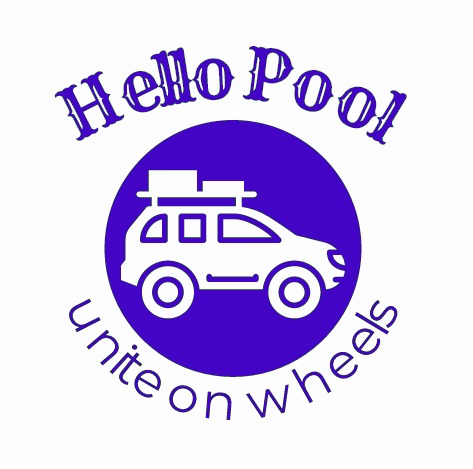
Made with love by
- Adarsh Baghel
- Ruchir Mehta
- Namani Sreeharsh
- Shaikh Ubaid
Link to Software Requirements Specification (SRS)
Link to UML Diagrams
Under the guidance of
Dr Puneet Gupta

Department of Computer Science and Engineering
Indian Institute of Technology Indore
Spring 2020
Screens
Log In Screen
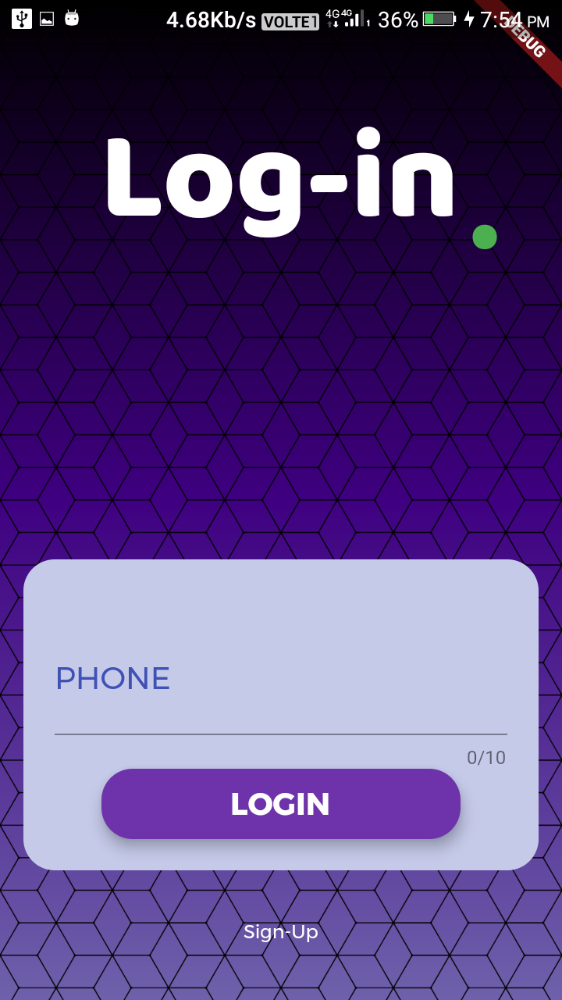
Home Screen
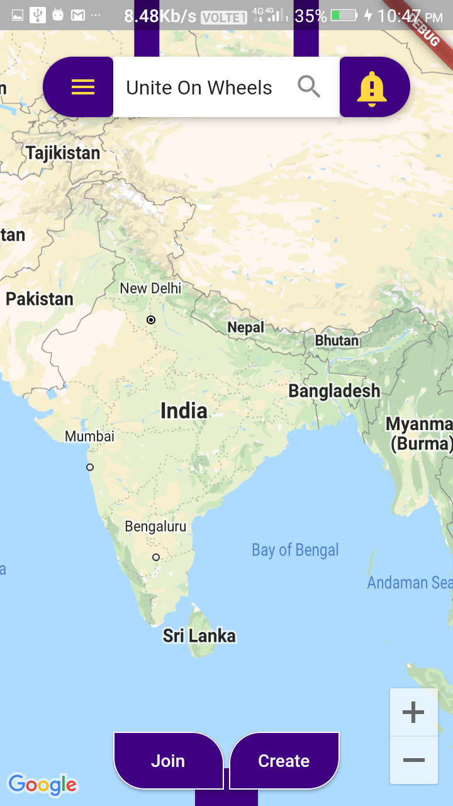
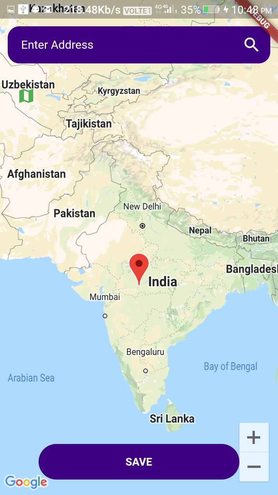
Menu
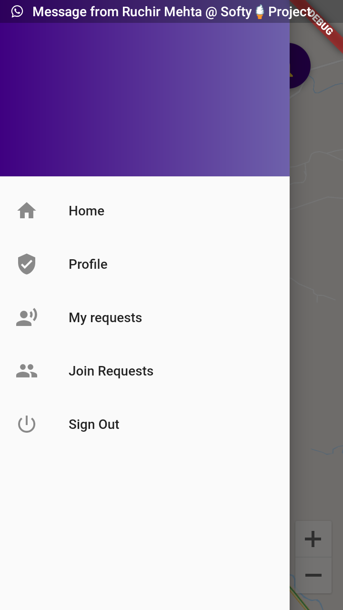
Join Plan
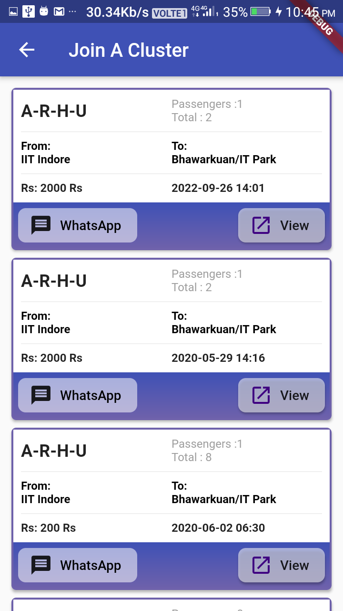
Create Plan
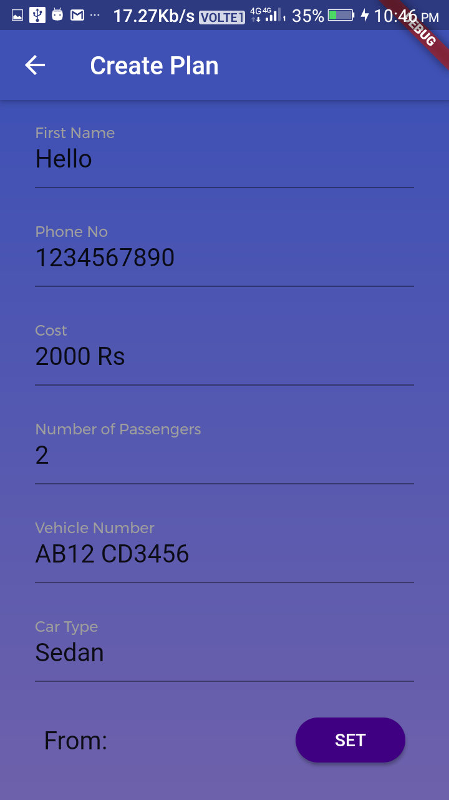
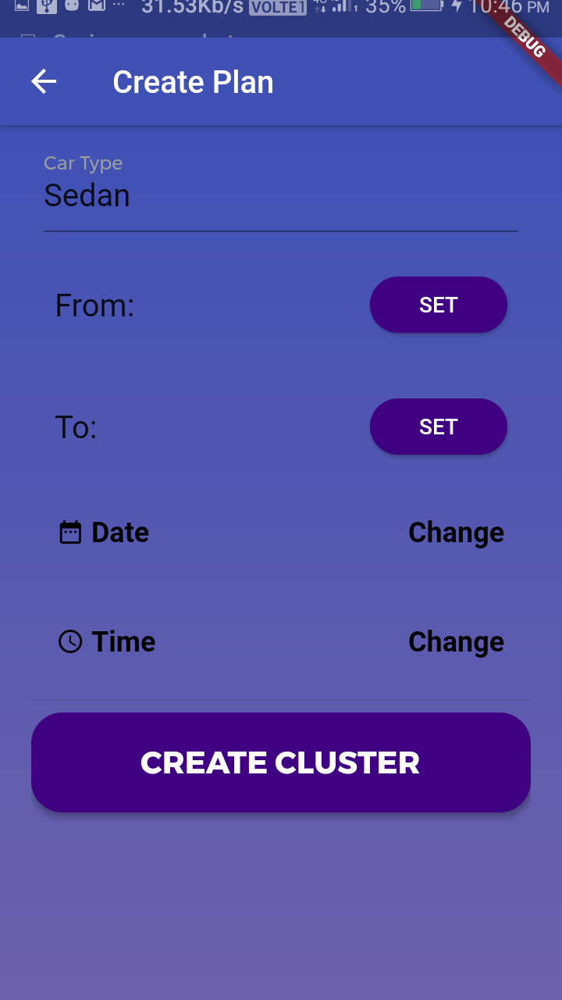
Requests
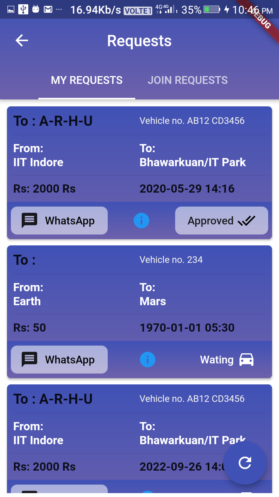
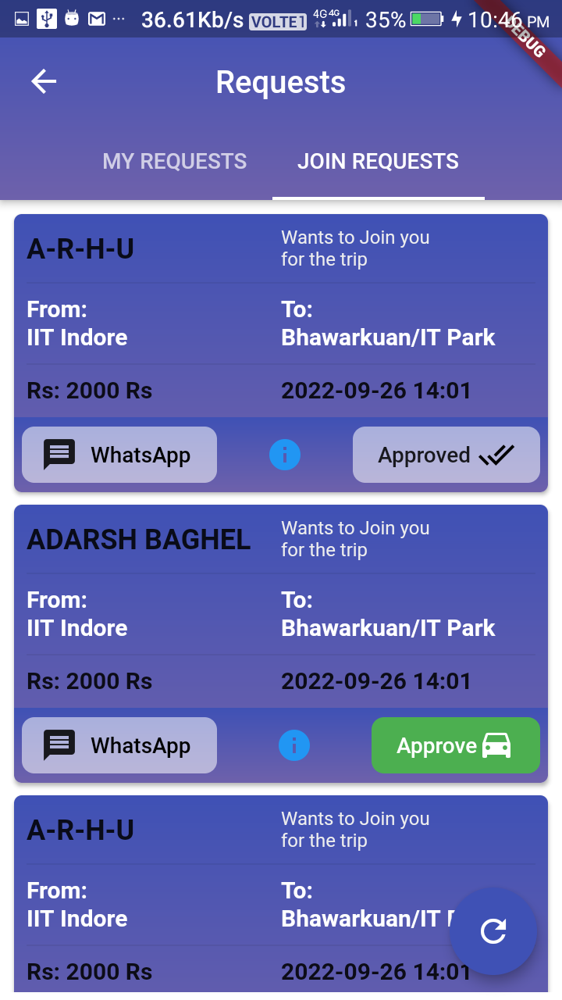
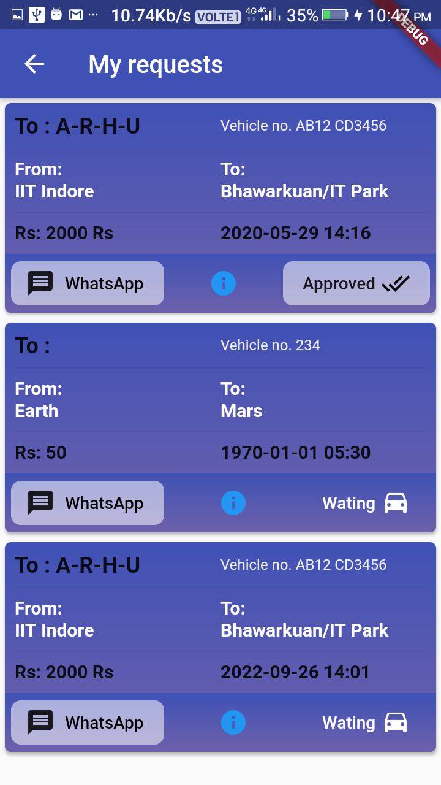
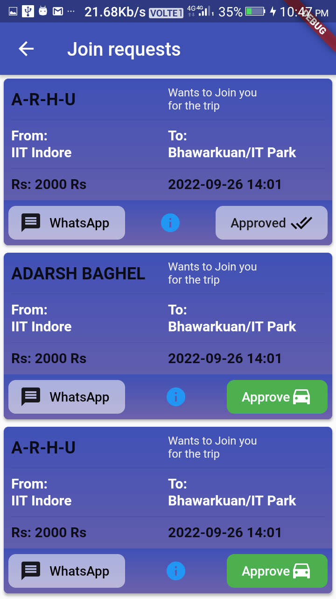
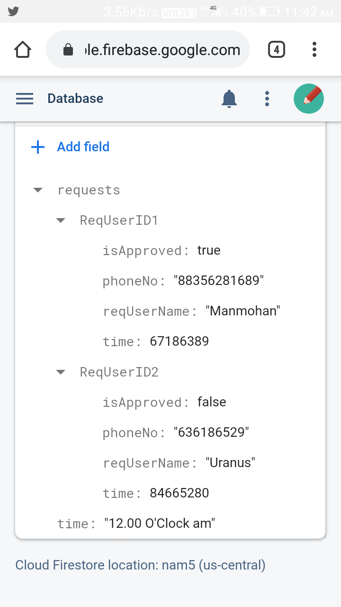
Profile Page
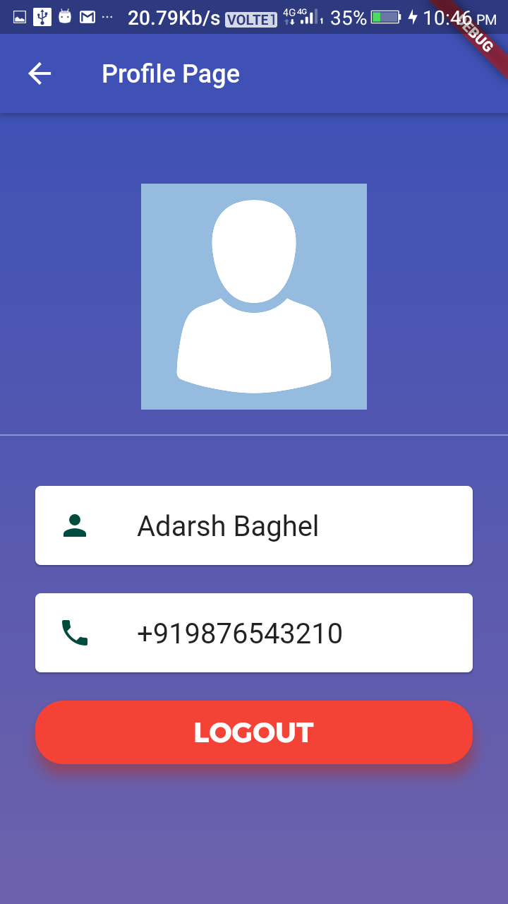
Journey Details Screen
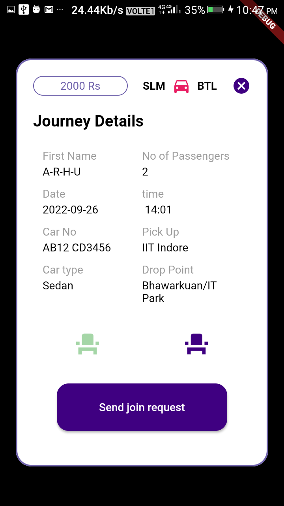
Introduction
Since inappropriate planning of the cities, there has been a big problem of traffic in most cities
of India. People spend much of their time in traffic every day. In Addition to this many vehicles
in traf ic makes rapid oil consumption, there has been an uprising problem of air pollution. Oil
supplies are very limited all over the world and oil prices are extremely expensive in our
country. Therefore, most of the people have to take buses and since the number of public
transportation vehicles are not suf icient, they travel under uncomfortable conditions.
There are some attempts to solve these problems, however, they focus only on intercity transportation.
We
came up with an ef ective solution as www.uniteonwheels.com .Our project will be used for both
intercity and urban transportations all over India. As a result, our system will be designed to
solve these problems and deficiencies of other systems .
Scope
The “Car Pooling for IITI” is a GPS-based mobile application which helps people to find the
closest vehicle based on the user’s current position and other specifications like time of
departure, price, contact information of passengers travelling and number of seats available. This
information will act as the basis for the search results displayed to the user. The application
should be free to download from either a mobile phone application store or similar services.
Furthermore, the software needs both Internet and GPS connection to fetch and display results.
All system information is maintained in a database, which is located on firebase( an online db
service). The application uses the mobile phone’s GPS navigator. By using the GPS-Navigator,
users can view available vehicles on a map and can navigate towards them. The application also
has the capability of representing both summary and detailed information about the available
vehicles which will take the passenger to the required destination .
This application will bring about a big revolution in sharing vehicles thus reducing pollution and
traffic in cities. This will be operated from both the passenger intended to travel and the
passenger already travelling in a vehicle and willing to share their ride.
Definitions, Acronyms, and Abbreviations
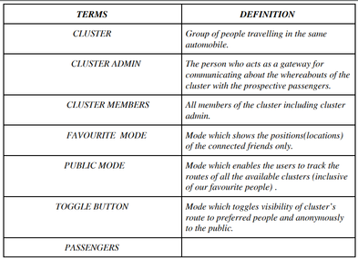
Functions
- #Sign Up: Users need to sign up to use the app. The users should have a username and
password. After filling their name, surname, email, age, designation, phone and gender
information, they register into the system.
- #Sign In: If a user is signed up, s/he can sign in the system by filling username and password
boxes.
-
#Sign Out: A user may need to sign out of the system. He/She can do it by clicking the sign out
button which is placed on every page.
- #Accepting passengers preferences: This functionality allows passengers to enter their
departure point, arrival point, mode of transport(car,autos,cabs,busses), date and time of
departure.There will be certain tolerance limit set by the user itself(for this we will have to set
lower tolerance limit(before preferred time) and upper tolerance limit(after preferred time) for
extracting recommendations) . User also can select the clusters which he/she wants to join i.e., if
he/she wants to join a favourite
- #Personalised suggestions: Our CarPooling Application analyses the database frequently and
gives personalised suggestions regarding best departing time(based on time tolerances)(this is
dif erent from preferred time as it may happen that a big cluster may begin their journey at some
time just before or after the preferred time, so our app may request us to depart at the nearest
time possible to the preferred time) , travelling time, mode of transport(car,autos,cabs,busses)
and nearest pickup locations and all other locations of pickup(there will be a certain criterion
(distance)for suggesting a place as the best point for boarding the vehicle which is certainly
walkable from the current position of the user)(this is dif erent from our point of departure as
sometimes, it may happen that a big cluster may depart from a point near the preferred pickup
point , so our app may suggest them to depart from the changed point) (this functionality also
encompasses route to that point)so that number of clusters is minimised at any point of time,
which is beneficial to all the users, as per head cost is significantly reduced.
- #Adding clusters to the database: Our application also needs user’s amicable co-ordination. If
users are ready to accompany some people then, this may also become a potential cluster and
adding this to the database will improve the reachability of the app. So, we enable users of the
app with the best possible UI to add their current location, their departure time, departure point,
arrival point. This is also integrated with personal chat with the passengers of the cluster for
knowing the conditions of the traf ic and also the feasibility of their inclusion in their cluster i.e,
if there exists heavy traf ic in the route planned before then, by personal chat existing passengers
may request him/her to choose another cluster over them or begin a new cluster.
- #Send Message: The users can communicate with each other by sending messages.
- #Reply To A Message: After receiving a message, the user can read the message and reply to it.
- # Block User: When a user receives a disturbing message, s/he can block the user who send that
message.
- #See cluster’s route: This functionality enables the user to see a particular cluster’s current
route and this is preceded by a set of all available clusters ready to accommodate additional
passengers.
- #Disable additional inclusions: This functionality disables the cluster to allow additional
passengers. Passengers can do this if they feel that they can’t accommodate additional
passengers and it stops covering their details.
- #Feedback from the customers: This functionality enables the customer to give their
feedback/suggestions regarding the service provided by the app and it lets the developers know
what functionalities are to be added from time to time on a regular basis . Users rate the
application by stars ranging from 1 to 5 inclusive of floating numbers ending with .5 .
User Characteristics
Users of this application belong to the community of IIT INDORE in the preliminary stage of the
app. Users need to enter the details and know the details at any point of time , mentioned in the
section of 2.2.They need to go to the city or some other tourist spots present in the vicinity of IIT
INDORE . For that, they need to know where and when maximum number of passengers are
using a particular automobile and list of groups of people who are ready to accommodate more
people. People needing to use the pooling service will only use the application. They may also be
ready to leave from the place
App Requirements
- Flutter: version 1.0
- Firebase: version 1.0
- The device should be a “SmartPhone” , not a Feature Phone.
- Minimum RAM(Random Access Memory): 1 GB
- Minimum Memory: 100 mb
- Android Version: 6.0 MarshMallow
- Location Service: The device must have a GPS(Global positioning system) receiver
hardware installed in it.
- Internet Connection: An active internet connection is a must to use this application.